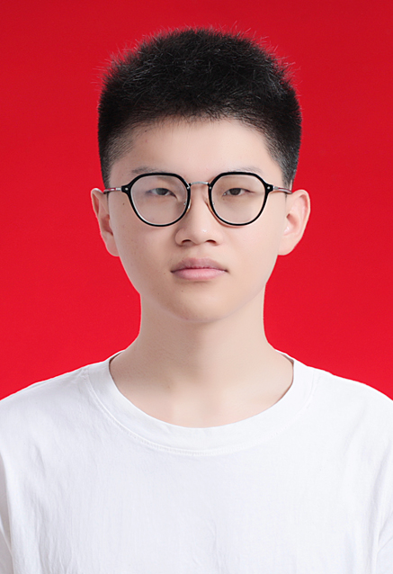

个人自我介绍

个人信息
姓名：陈润泽
年龄：18
职业：学生
教育背景
- 2012-2018年 - 固始县实验小学
- 2018-2021年 - 固始县永和中学
- 2021-2024年 - 固始县高级中学
- 2024-2028年(预计) - 华中科技大学
任职履历
- 小学3-6年级 数学课代表
- 初中7-9年级 学习委员
- 高中1-3年级 副班长
- 大一 学习委员
个人技能
- 乒乓球：又菜又爱玩 - 能力指数40/100
- 飞盘：勉强入门 - 能力指数60/100
- 电子游戏：中规中矩 - 能力指数80/100
兴趣爱好
打乒乓球，听音乐，玩游戏，睡觉。